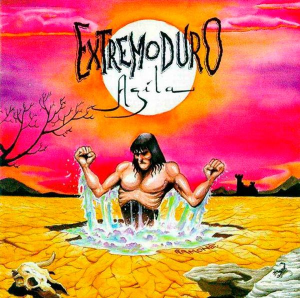
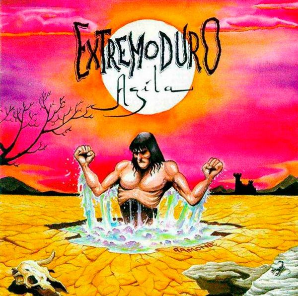

Agila
Información
Año:1996
Artista: Extremoduro
Genero: Hard-Rock
Nº de pistas: 13
Duración: 43' 22''
Año:1996
Artista: Extremoduro
Genero: Hard-Rock
Nº de pistas: 13
Duración: 43' 22''
Año:1982
Artista: Michael Jackson
Genero: Pop
Nº de pistas: 7
Duración: 42' 16''

Año:1996
Artista: Extremoduro
Genero: Techno,Trance
Nº de Pistas: CD1: 20 | CD2: 18 | CD3: 17
Duración: 180' 24''

Año:1993
Artista: Def Con Dos
Genero:
Nº de pistas: 14
Duración: 45' 10''